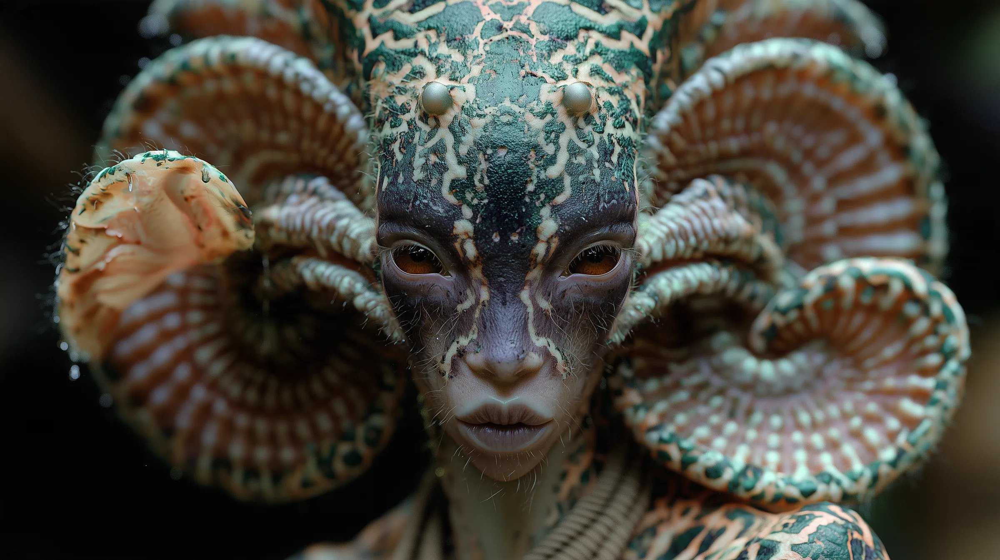
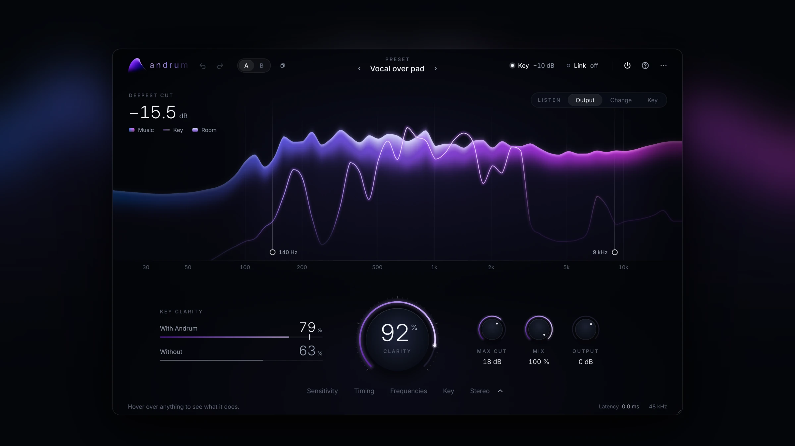
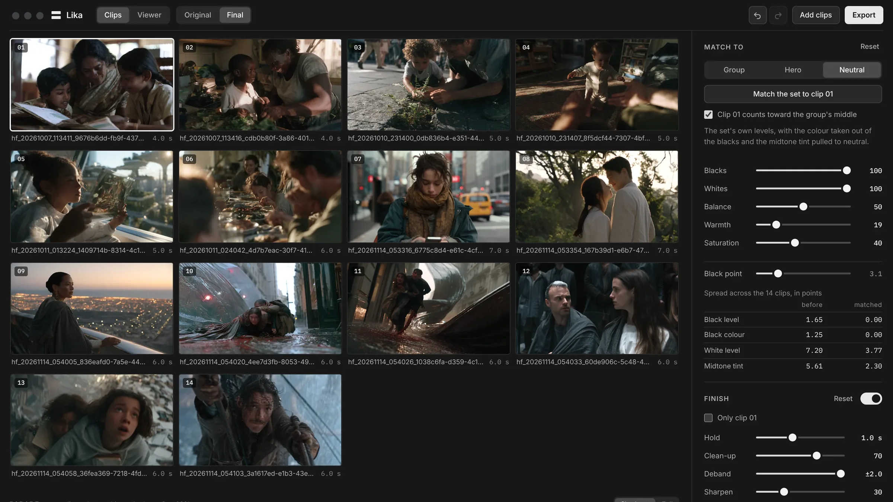
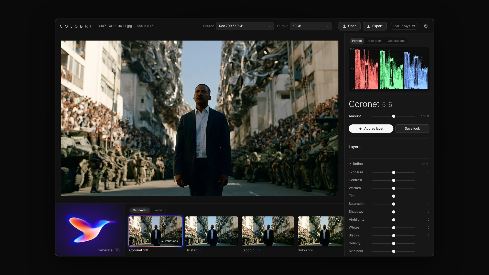
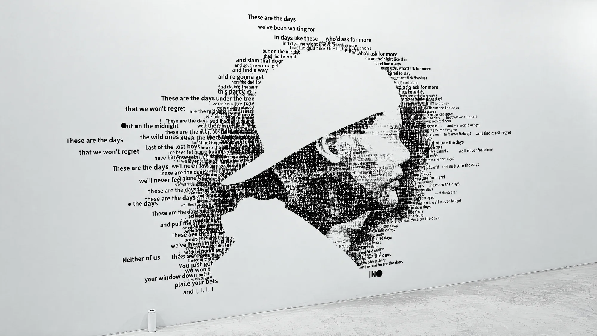
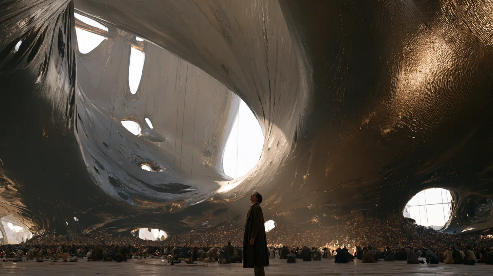
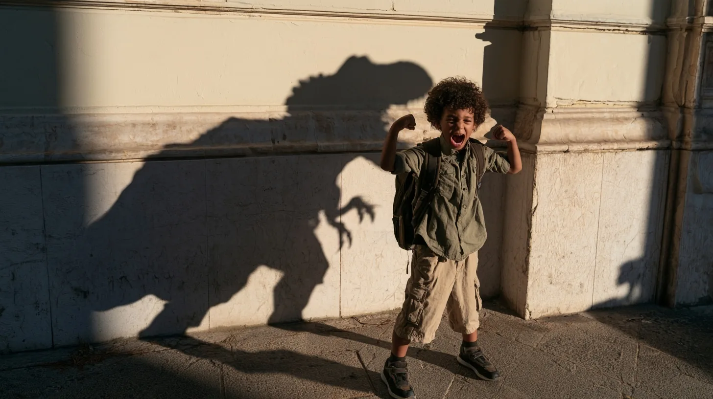

I build worlds.
Film, art, music, software
Creative director, filmmaker and artist, turning imagination into something you can feel.
Selected work

Nakãya
An original universe
Worldbuilding & art
Andrum
Space for sound.
Audio plugin
Lika
Every clip, the same film.
Mac app
Colobri
Color, composed.
Color grading app
Avicii
The Days & beyond
Music videos
The Last Testament
A movie in the making
Film
DINOS
Another world, brought to life.
Immersive experienceA little about me
I’m David, a creative director,
filmmaker and artist based in Stockholm.
I work in light, sound and code: films, music, software and places you can walk into. Some of it I make with artists and organisations, and some of it is my own, like the world of Nakãya and the tools Andrum, Lika and Colobri. Either way, I’m drawn to work that makes you feel something.